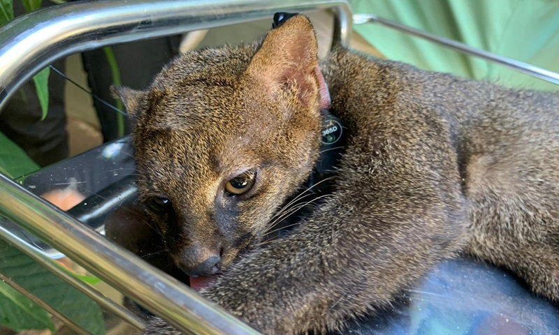
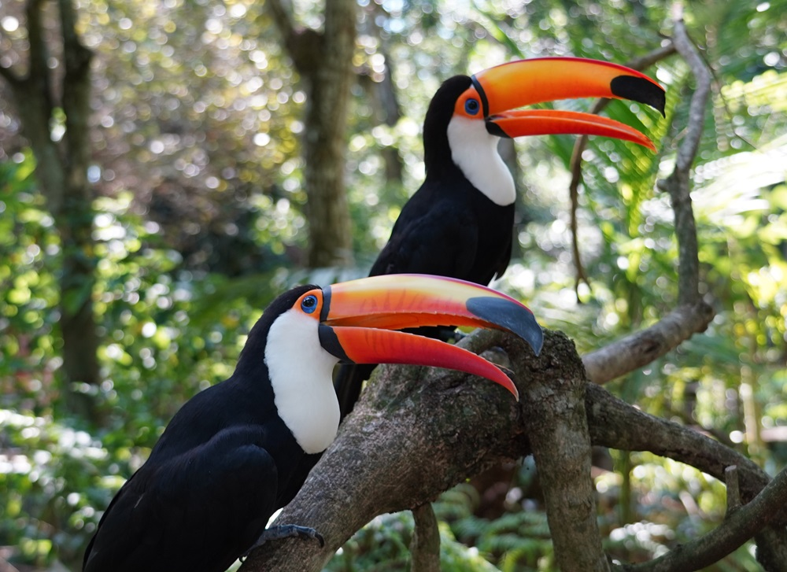
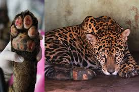
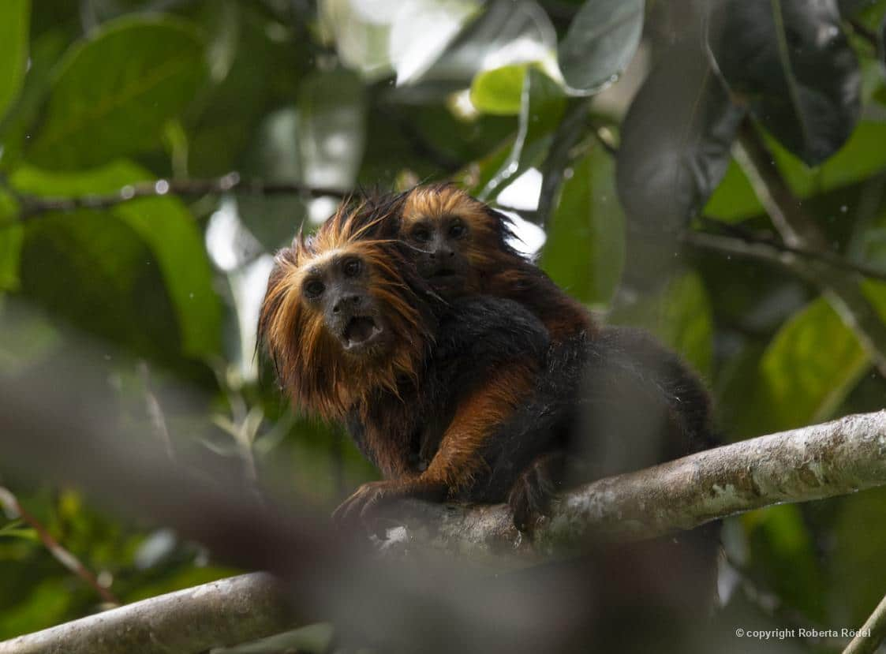

Fauna
Mata Atlântica
Descubra mais sobre a situação da floresta.
Saiba MaisFauna
A fauna da Mata Atlântica enfrenta diversos desafios causados pelo desmatamento, pela caça ilegal e pela destruição dos habitats naturais. Muitas espécies já estão ameaçadas de extinção, tornando a preservação desse bioma essencial para a sobrevivência de milhares de animais.
04/05/2026

A situação dos animais da Mata Atlântica é cada vez mais preocupante. Considerado um dos biomas mais ricos em biodiversidade do planeta, esse ambiente abriga milhares de espécies de mamíferos, aves, anfíbios, répteis e insetos. No entanto, a destruição das florestas, a caça ilegal, as queimadas e a poluição colocam muitos desses animais em risco de extinção.
Com a redução da vegetação nativa ao longo dos anos, diversos animais perderam parte de seus habitats naturais. Isso dificulta a busca por alimento, água e locais seguros para reprodução. Muitas espécies acabam isoladas em pequenos fragmentos de floresta, o que prejudica o equilíbrio das populações e reduz a diversidade genética.
Entre os animais mais ameaçados estão o mico-leão-dourado, a onça-pintada, a jacutinga e o muriqui, considerado o maior primata das Américas. Alguns desses animais possuem papel fundamental na manutenção da floresta, ajudando na dispersão de sementes e contribuindo para o crescimento de novas árvores. Quando essas espécies desaparecem, todo o funcionamento do ecossistema é afetado.
Além da perda de habitat, a poluição dos rios e o avanço das cidades também prejudicam a fauna local. Muitos animais sofrem com atropelamentos em rodovias, contaminação da água e tráfico ilegal de espécies silvestres. Em várias regiões, o desequilíbrio ambiental já provocou diminuição significativa da quantidade de animais encontrados na natureza.
Apesar desse cenário, projetos de preservação têm buscado proteger a fauna da Mata Atlântica. Organizações ambientais realizam resgates, monitoramento de espécies ameaçadas e recuperação de áreas degradadas. O reflorestamento e a criação de reservas ambientais ajudam a oferecer novas condições para que esses animais sobrevivam.
Assim, preservar a fauna da Mata Atlântica é essencial para manter o equilíbrio da natureza e proteger uma das maiores riquezas ambientais do Brasil.



Fauna
Descubra mais sobre a situação da floresta.
Saiba MaisFauna
Fauna
Desvenda sobre todos os animais, que infelizmente, estão em situação de risco.
Saiba Mais